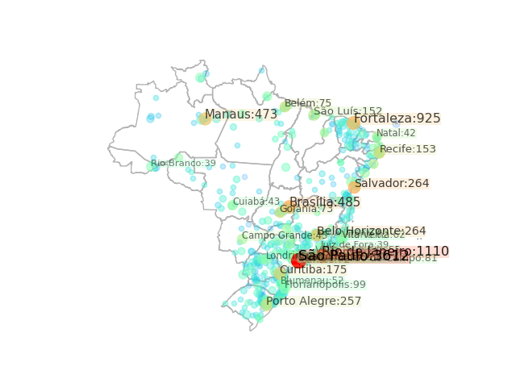

Casos confirmados de COVID-19 no dia 06/04/2020
Fonte: G1
#
Cidade
UF
Casos Confirmados
1
São Paulo
SP
3612
2
Rio de Janeiro
RJ
1110
3
Fortaleza
CE
925
4
Brasília
DF
485
5
Manaus
AM
473
6
Salvador
BA
264
7
Belo Horizonte
MG
264
8
Porto Alegre
RS
257
9
Curitiba
PR
175
10
Recife
PE
153